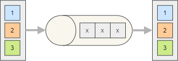

Encrypt Produced Messages
The end-to-end message encryption in Silverback is handled transparently in the producer and consumer and works independently from the used Serializing the Produced Messages or other features like Producing Chunked Messages.
{kind=link}

Symmetric Encryption
Enabling the end-to-end encryption using a symmetric algorithm just require an extra configuration in the endpoint.
The default symmetric encryption algorithm is AES.
services.AddSilverback()
.WithConnectionToMessageBroker(options => options.AddKafka())
.AddKafkaClients(clients => clients
.WithBootstrapServers("PLAINTEXT://localhost:9092")
.AddProducer("producer1", producer => producer
.Produce<MyMessage>("endpoint1", endpoint => endpoint
.ProduceTo("my-topic")
.EncryptUsingAes(encryptionKey))));
But you can customize it.
services.AddSilverback()
.WithConnectionToMessageBroker(options => options.AddKafka())
.AddKafkaClients(clients => clients
.WithBootstrapServers("PLAINTEXT://localhost:9092")
.AddProducer("producer1", producer => producer
.Produce<MyMessage>("endpoint1", endpoint => endpoint
.ProduceTo("my-topic")
.Encrypt(new SymmetricEncryptionSettings))));
{
AlgorithmName = "TripleDES",
Key = encryptionKey
}))));
The SymmetricEncryptionSettings class encapsulates all common settings of a symmetric algorithm (block size, initialization vector, ...).
The AlgorithmName is used to load the algorithm implementation using the SymmetricAlgorithm.Create(string) method. Refer to the SymmetricAlgorithm class documentation to see which implementations are available in .net core are. Silverback uses Aes by default.
Random Initialization Vector
If no static initialization vector is provided, a random one is automatically generated per each message and prepended to the actual encrypted message. The consumer will automatically extract and use it.
It is recommended to stick to this default behavior, for increased security.
Key Rotation
You can smoothly rotate the key being used to encrypt the messages and to enable this feature you simply need to specify an identifier for the current key in producer endpoint configuration.
services.AddSilverback()
.WithConnectionToMessageBroker(options => options.AddKafka())
.AddKafkaClients(clients => clients
.WithBootstrapServers("PLAINTEXT://localhost:9092")
.AddProducer("producer1", producer => producer
.Produce<MyMessage>("endpoint1", endpoint => endpoint
.ProduceTo("my-topic")
.EncryptUsingAes(encryptionKey, "key1"))));